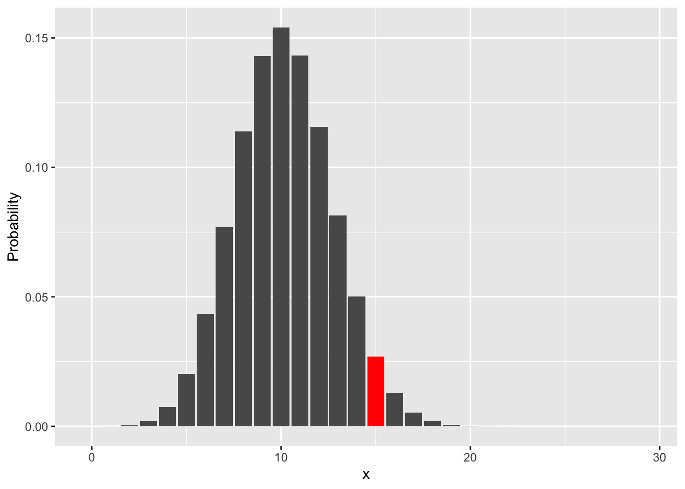
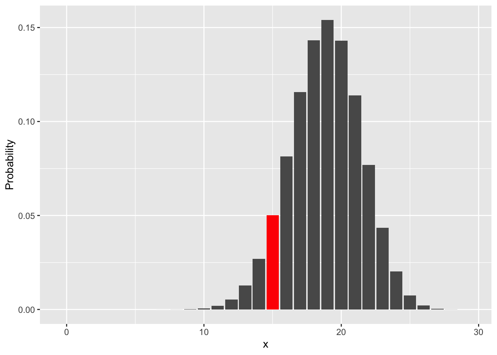

1.2 The concept of likelihood
The idea of likelihood is a very powerful one. To start gently, consider the single observation at ethylene chloride concentration 35.55 which killed 15 beetles out of a group of 29, giving the proportion 0.517. The binomial distribution describes all the possible values that we might observe, and the probabilities of observing them, for a particular size of group and with a particular probability (prob) of success (death in the present case) for each beetle. A formula for the binomial distribution can be derived by the rules of probability but we can use R to compute these conveniently, using the dbinom(x, size, prob) function. The plots below show all the outcomes (0 to 29) and their probabilities when size = 29 and with prob set to 0.35, 0.50 and 0.65. The code is shown only for the case when prob is 0.35.
ggplot() + geom_col(aes(0:29, dbinom(0:29, 29, 0.35))) +
geom_col(aes(15, dbinom(15, 29, 0.35)), fill = 'red') +
labs(x = 'x', y = 'Probability')
The idea of likelihood turns this perspective around. Instead of specifying the parameter of the model, namely the probability of success, and then considering the consequences in terms of the observations we may see, likelihood starts with the observed data and considers what parameter values might be consistent with that. In the plots above, the probability associated with the observed value of 15 is highlighted in red. If we assume that the true parameter is 0.35 then the probability of observing an outcome of 15 is very low and the same is true if we assume the true parameter is 0.65. The probability of observing 15 is much higher when we assume the true parameter to be 0.5. This gives a means of quantifying the relative plausibility of different parameter values.
To use more scientific notation, the binomial probability for any outcome \(k\) for the number killed can be written as \(pr(k; m, p)\), where \(pr\) is a (mathematical) function which gives the probability of outcome \(k\) when the group size is \(m\) and the probability of success for an individual beetle is \(p\). So \(pr\) is a function of \(k\) for fixed values of \(m\) and \(p\). The likelihood function is simply \(pr(k; m, p)\) viewed as a function of \(p\), with \(k\) fixed at the observed value. (The parameter \(m\) is fixed by the design of the experiment.) To emphasise this change in perspective, the likelihood function is written as \(L(p; k, m)\) to indicate that \(k\) is fixed and the likelihood is a function of \(p\).
p <- seq(0.25, 0.75, length = 50)
dfrm <- data.frame(p, likelihood = dbinom(15, 29, p))
ggplot(dfrm, aes(p, likelihood)) + geom_line()
The plot above shows the likelihood function. The maximum likelihood estimate of \(p\) is, as the name suggests, the value of \(p\) which maximises the likelihood function. Inspection of the plot shows this to be just above 0.5. In fact it is 0.517, the sample proportion of beetles killed. It is not a surprise that a good estimate of the proportion of beetles killed in the population at this concentration is the proportion of beetles killed in the sample. However, it is impressive that this has resulted simply by employing the concept of the likelihood function, without building in any further information. This strategy has supplied an obvious estimate in this simple case but it can also provide estimates in much more complex cases where it is not at all clear what might constitute a good estimate.
The model for all the flour beetle data from the ethylene dichloride toxin is more complex. Each group of beetles exposed to ethylene dichloride at a particular concentration has its own particular group size \(m_i\), outcome \(k_i\) and underlying probability of success \(p_i\), where \(i\) takes the values \(1, \ldots, n\) to identify the different groups. Here \(n=9\). When there are multiple observations then, under some assumptions, the elementary rules of probability tell us that the probability associated with the set of all observations is the product of the probability of each. The key assumption is that the observations are independent, meaning that knowledge of the particular variation associated with one tells us nothing about the variation at another. That seems a reasonable assumption in the present case. So, following our earlier notation, the likelihood function based on the observations \(k_1, \ldots, k_n\), the group sizes \(m_1, \ldots, m_n\) and the underlying probabilities \(p_1, \ldots, p_n\) is \[ L(\alpha, \beta; k_1, \ldots, k_n, m_1, \ldots, m_n) = L_1(p_1; k_1, m_1) \ldots L_n(p_n; k_1, m_n) \] The combined likelihood function on the left hand side is written in terms of the two model parameters \(\alpha\) and \(\beta\) because in the logistic model the individual probabilities are constructed as \(p_i = \frac{e^{\alpha + \beta x_i}}{1 + e^{\alpha + \beta x_i}}\), so there are only two unknown parameters.
As likelihood functions often involve products, it can be convenient to apply use the log function to turn these into sums. The log scale does not change the location of the maximum likelihood estimates, as the values which maximise the likelihood also maximise the log-likelihood. It turns out that there are other very powerful reasons for using the log scale and we will explore these later. The log-likelihood function is defined as
\[
l(\alpha, \beta; k_1, \ldots, k_n, m_1, \ldots, m_n) = log(L_1(p_1; k_1, m_1)) + \ldots + log(L_n(p_n; k_1, m_n))
\] The rp.logistic function mentioned above has an option (as a checkbox on the side panel) to display the log-likelihood function. Try this. You can add the maximum likelihood estimate. There are other options which we will explore later.
As a more static illustration, the code below uses the expand.grid function to create a grid of possible values of \(\alpha\) and \(\beta\) in the matrix pars and defines a function ll.fn which evaluates the log-likelihood at any particular choice of parameters. The apply function, described in Section ??, then applies this function repeatedly to the rows of pars. The ggplot geometry geom_contour_filled then displays the likelihood surface as a function of \(\alpha\) and \(\beta\). The maximum likelihood estimates, \(\hat\alpha\) and \(\hat\beta\), where the ‘hat’ notation indicates that these are estimates of the unknown parameters \(\alpha\) and \(\beta\), are marked on the plot. This confirms the results of the glm function which fitted the model to these data in the previous section.
ethylene <- filter(flour_beetles, Toxin == 'Ethylene_dichloride')
alpha <- seq(-25, -4, length = 50)
beta <- seq(0.1, 0.8, length = 50)
pars <- expand.grid(alpha = alpha, beta = beta)
ll.fn <- function(theta, data) {
lp <- theta[1] + theta[2] * data$Concentration
probs <- exp(lp) / (1 + exp(lp))
likes <- dbinom(data$Dead, data$Living + data$Dead, probs)
sum(log(likes))
}
pars$log_likelihood <- apply(pars, 1, ll.fn, data = ethylene)
ggplot(pars, aes(alpha, beta, z = log_likelihood)) +
geom_contour_filled(breaks = c(-10000, seq(-400, 0, length = 15))) +
geom_point(aes(model$coefficients[1], model$coefficients[2]), col = 'red', size = 3)The concept of likelihood can deliver much more insight and some of this will be explored in Section 1.4 below, but the ability to fit models to data by finding the maximum likelihood estimates of the unknown parameters already provides a very powerful mechanism.